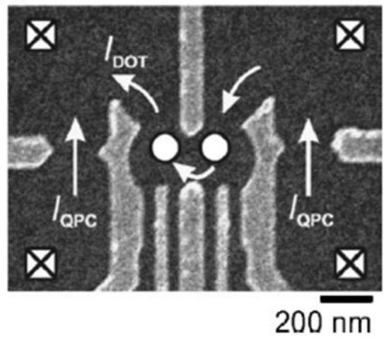
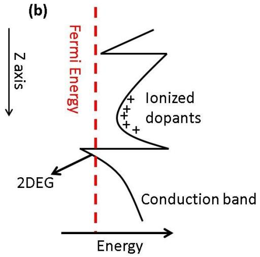

物理图像与定义
GaAs/AlGaAs 异质结由分子束外延（MBE）按层依次生长 GaAs 与 AlxGa1-xAs 形成；当 Al 组分 时，AlGaAs 的禁带宽度（约 ）大于 GaAs（约 ），导带与价带在界面处都出现不连续 、。在 n 型 AlGaAs 中掺 Si 后，电离施主的内建电场把 GaAs 一侧靠近界面的导带底向下弯至费米面以下，形成深度约几百 meV 的三角势阱。低温下电子只占据量子化的基态子带，分布在界面下方约 – 深处的一个薄层内，平面内自由运动——这就是二维电子气（two-dimensional electron gas, 2DEG）。GaAs 与 AlGaAs 的晶格常数几乎相同（失配 ），加 MBE 可形成原子级平整界面，使杂质散射极小，4.2 K 下 GaAs/AlGaAs 的 2DEG 迁移率可达 –，远超其他体系。
表面蒸镀的金属门电极在 2DEG 之上形成肖特基接触；负偏压时把覆盖区下方的 2DEG 排空，正偏压时把电子吸引至金属–半导体界面附近形成积累层。用细栅围出”岛”、用 barrier 栅隔出势垒，就把 2DEG 切成半导体量子点——横向量子点的源、漏与量子点都在同一 2DEG 层内，载流子沿平行于界面的方向输运。AlGaAs 层中掺 Si 后做高温快速退火，可形成与 2DEG 连通的 Ni/Ge/Au 欧姆接触，把量子点信号引出到外部测量电路。

GaAs/AlGaAs 单量子点与双量子点典型扫描电镜照片
异质结的能带与三角势阱

掺杂 GaAs/AlGaAs 异质结层结构与垂直能带图
本组常用调制掺杂（modulation-doped）GaAs/AlGaAs 晶圆（ 给出的自上而下参数）： GaAs 盖帽层、 AlGaAs 隔离层、 Si 掺杂 AlGaAs 重掺杂层（Si 浓度 ）、 AlGaAs 缓冲层、 GaAs 基底；Al 组分取 。在该结构下 2DEG 形成在距表面约 处。 的样品同为 GaAs/Al0.3Ga0.7As 异质结，自上而下为 GaAs 盖帽、 AlGaAs 层（含 Si 掺杂，）、 GaAs 基底，未掺杂”空白层”与掺杂 n-AlGaAs 相距约 以减少散射，2DEG 同样位于表面下约 –。 综述不同批次的晶圆参数：批次 #28 、；批次 #34 、；批次 #35 、。
在生长方向 上，GaAs/AlGaAs 界面的三角势阱可近似为线性势 加无限高势垒，束缚态由 Airy 函数给出
最低子带能量 ，其中 是 Airy 函数第一零点。有效电场 来自电离施主的内建电场（n-AlGaAs 中）和表面栅压的诱导电场两部分；后者可调，因此通过栅压可微调 2DEG 的子带间距。平面内色散近似为抛物线 ，GaAs 电子有效质量 ，对应面内费米波长 在 量级下约 。
更严格的自洽求解要把静电势 与 2DEG 电荷密度 通过一维薛定谔-泊松（Schrödinger-Poisson, S-P）方程联立
自洽求解得到大栅压下 2DEG 深度、子带占据与势阱形状。这是商用软件 nextnano、SIMNAD 和部分自研脚本中处理 GaAs 量子点纵向势的标准流程。
从 2DEG 到栅控量子点
栅控门电极工艺主要分三类：浅刻蚀（传统掺杂型）、湿法刻蚀 mesa + 欧姆接触（传统掺杂型）和双层栅极（非掺杂积累型）。三类工艺的差异在噪声表现与可控性上各有取舍：
- 湿法刻蚀 + 欧姆接触（ / / ）：先以 配比的刻蚀液去掉 mesa 外的 2DEG（约 ），再蒸镀 Ni / GeAu / Ni，并在 、 氮氢混合气中退火 – 形成欧姆接触。肖特基门电极采用 ，电子束光刻定义 量级的最细线宽。门电极功能通常按位置分：plunger gate 调节点内电子能级，barrier gate 调节量子点与电子库之间的隧穿势垒，middle gate 调节双点间的耦合强度，QPC gate 调节电荷传感通道。
- 浅刻蚀：在同一片掺杂基片上用电子束曝光加湿法浅刻蚀至掺杂层（–）形成二维电子气窄带，把大部分肖特基电极下方的 2DEG 直接移除。其电荷噪声比同片传统栅极电控单量子点低约一个数量级，验证了”肖特基电极下方二维电子气是掺杂 GaAs 中 1/f 电荷噪声主要来源”的图像。
- 双层栅极 + 斜蒸发：用 MBE 在 GaAs 表面以下几十纳米处插入一层 氧化铝作栅氧，再斜蒸发蒸镀顶部大电极积累 2DEG，下层细栅形成势垒。完全去除掺杂层后，2DEG 的载流子不经 AlGaAs 掺杂层，2DEG 面密度可达 ，迁移率 –，与传统调制掺杂水平相当，但电荷噪声水平降到 –。
门电极的电容参数与栅型紧密相关：文献给出经验参考值——GaAs 中 plunger gate 杠杆臂 、barrier gate （无量纲）。横向量子点的典型尺寸约 ，与费米波长同量级，因此量子点少电子区由若干条子带贡献。
量子点哈密顿量与平台特征
栅控量子点的能级用常相互作用模型（CI 模型）描述：把电子–电子库仑作用与电子–电极耦合全部压缩为总电容 ，单粒子能级 与填充数无关。在源极加 、漏极接地、栅压 时， 电子态的总能量
电化学势 在百纳米级 GaAs 量子点中 很小、 远大于 ，电化学势近似等间距排列，库仑峰近似等周期出现。
磁场下每个子带进一步按塞曼能 劈裂，GaAs 导带电子 （实验上拟合多量子点数据常得到 –， 在其实验中拟合 ）。这给出电荷–自旋比特的统一哈密顿量
其中 是电荷比特中两量子点电化学势之差（失谐）， 是点间隧穿隧穿耦合；自旋比特则在 能量标度上额外引入 交换相互作用 ，把单比特哈密顿量扩展为 Heisenberg 型。
GaAs 的另一项特征是天然核自旋：每个晶胞中 、、 三种同位素均带有非零核自旋（、、），电子自旋通过超精细相互作用与约 – 个核自旋耦合，构成 Overhauser 场。这是 GaAs 自旋比特 通常被限制在 ns 量级以下的核心原因（ 综述）。力学量上的后果是：自旋比特退相位由核自旋随机翻转主导，Hahn 回波能延长至 但仍受 噪声限制；同位素纯化（如富集 或 ）则把这条边界从材料层面打破，这是 GaAs 在长相干自旋比特路线上被 Si/SiGe 取代的根本原因。
改进型结构：浅刻蚀与非掺杂 GaAs
针对传统调制掺杂 GaAs 中 、 的短板， 系统比较了三种改进路线：
- 浅刻蚀量子点：在同一块调制掺杂 GaAs 基片上制作浅刻蚀量子点（–）和传统单点对比，He-3 制冷机 下用 SR785 测 – 电流噪声谱并积分到库仑峰位置的电流涨落 。浅刻蚀量子点的 比传统点低一个数量级，但与相同工艺的浅刻蚀点噪声级别相近，从而证实”肖特基电极电压涨落经由电极下方的二维电子气漏电流注入量子点是掺杂 GaAs 中 1/f 噪声的主要通道”。
- 非掺杂双层栅极结构：完全去掉 MBE 生长的 Si 掺杂层，用 ALD 沉积 氧化铝作栅氧，斜蒸发镀 铝顶电极，正栅压在 GaAs/AlGaAs 界面附近感应出 2DEG（约在表面下 ），势垒由下层细栅调节。同片范德堡样品测得 2DEG 面密度最高 ，迁移率 –。在此基础上完成的双量子点电荷噪声水平 –，与传统浅刻蚀点相当，证明移除掺杂层确实抑制了电荷噪声。
- PAT 表征相干性：在非掺杂双量子点上用 光子辅助隧穿（photon-assisted tunneling, PAT）测电荷量子比特的相干时间，、，与掺杂 GaAs 传统点相近（ 报告）。原因是绝缘层的微波加热把电子温度抬到 ，所以进一步改善需要生长更低损耗的栅氧。
这三条改进路线把 GaAs 平台从”标准噪声参考”推进到与 Si-MOS 可比的电荷噪声水平，但相干时间仍受 GaAs 自身核自旋与压电声子限制，因而高保真自旋工作逐步让位给硅、锗。
参数与量级
| 量 | 典型值 | 备注 / 来源 |
|---|---|---|
| Al 组分 | （多数实验组） | 、、 |
| Si 掺杂浓度 | – | ；2DEG 形成位置 |
| 2DEG 面密度 | – | 批次 #28–#36 |
| 4.2 K 迁移率 | – | 4.2 K 标准霍尔测量， |
| 量子点横向尺寸 | ||
| 总电容 | 浅刻蚀 GaAs 单点实测， | |
| 充电能 | 同上 | |
| 杠杆臂 | plunger 、barrier （无量纲） | 经验值， |
| 电荷比特弛豫 | – | 掺杂型 vs 非掺杂型， |
| 自由退相干 | （电荷）；（自旋） | 核自旋主导 |
| 电子温度 | 稀释制冷机 ，He-3 | 库仑峰半高宽反推， |
| 因子 | – | GaAs 导带电子； 拟合 |
| QPC 阈值电导 | 灵敏度最高工作点， | |
| 浅刻蚀深度 | – | ，刻蚀速率 ， |
| 顶栅电压 | 产生 积累 2DEG | 非掺杂结构， |
| 浅刻蚀点低频电流涨落 | 比传统栅控点低约一个数量级 | – 积分， |
实验特征与测量方法
直流输运 + 锁相放大。标准测量是在源极叠加以锁相放大器 SR830 输出的 、 交流激励与直流偏压 ，扫描栅压 测微分电导 。多电子区相邻库仑峰等周期排列；峰间距给出门–点电容 ，峰高由隧穿率 、 决定。增大 时阻塞区展开为库仑菱形，由菱形高度读 、宽度读 、两条边斜率给 ，菱形外的平行线对应激发态能级间距 。在 GaAs 双量子点上，这一参数提取流程可同时得到 、 与 ，其中 可随中间电极电压从 调到 （指数型调节， 拟合）。
电荷稳定图与蜂窝结构。两个 plunger gate 同时扫描时得到电荷稳定图，蜂窝的每个六边形对应固定的 电子占据。蜂窝顶点对应量子点间隧穿线，在 之间形成两能级体系，哈密顿量仍取 。通过微波驱动可在该处出现 光子辅助隧穿 边带：驱动把原能级劈裂为 ， 阶边带的强度由第一类 Bessel 函数 决定（）。 在 GaAs 双点上观察到至多 14 阶光子过程，同时测得电荷态弛豫时间 。
电荷传感。紧邻量子点的QPC 是高灵敏度的电荷传感器：在量子点上加 、 负压形成 QPC 通道，把其电导调至 （斜率最大处）以获得最佳灵敏度。量子点每进出 1 个电子，QPC 电流出现跳变台阶；QPC modulation（栅极上加交流 + 微弱直流）把跳变转换为锁相可读的微分信号。射频反射测量把 QPC/SET 与 LC 谐振电路耦合，把电荷跳变转换为射频阻抗变化，可用网络分析仪单发测量。这一技术在 GaAs 双量子点上支撑了 单发读出：Elzerman 等人 2004 年的标志性工作即在 GaAs 单量子点上完成单电子自旋单发读出，是自旋量子比特工程化的基础之一。
谐振腔耦合。GaAs 2DEG 也可与片上 NbTiN 或 SQUID 阵列高阻抗谐振腔共片集成。 在 GaAs/AlGaAs 衬底上先湿法刻蚀掉腔区域的 2DEG（避免对腔的耗散），再溅射 NbTiN 做透射腔（，）并把双量子点的 plunger 接到腔中心导体。量子点–腔全局耦合强度 ，由混合角 与电荷–光子耦合杠杆臂进一步调制为 。这是 GaAs 自旋比特接入自旋–光子耦合与JC 模型杂化能级的主要路线，腔幅值与相位信号可直接读出量子点电荷态。
自旋比特操控。在 GaAs 双点上 - 比特的演化由交换相互作用 驱动， 随失谐 单调变化——这是 S-T 比特 与 交换门 的物理基础。Patel 等人在 GaAs 双点上用此哈密顿量演示了 99.5% 保真度的闭合回路控制；但代价是每次操作都要先初始化到 （用 与 之间的塞曼能差），并通过Landau-Zener 跃迁在 附近绝热穿过反交叉。Landau-Zener-Stückelberg 干涉在 GaAs 双点上由 直接测得，是研究电荷比特相干性与非绝热跃迁的标准工具。
两比特逻辑门。 在 GaAs/AlGaAs 四量子点上设计强电容耦合双电荷比特：上下两组双点通过中间电极的开口耦合，耦合能 可在 范围调节。当 、 时，系统形成两比特受控旋转门（CROT）的本征结构；CNOT 是其 旋转特例。同一小组进一步在三电荷比特结构上演示了静态 Toffoli 门：两个控制比特 或 通过耦合能 、 抑制目标比特的拉莫振荡，因此只有当两个控制比特同时为 时目标比特才发生 翻转。
主要限制
核自旋噪声。每个电子自旋与约 个 与 核自旋通过超精细耦合，构成 quasi-static 的 Overhauser 场 ，其涨落决定了 。GaAs 中动力学解耦（如 CPMG 序列）可将 拉长到约 （ 综述），但电荷比特对核自旋不敏感，因此同位素纯化对电荷比特不构成主要限制，而自旋比特则直接受其制约。
电荷噪声。 噪声是 GaAs 量子点电荷比特的退相干主因。传统调制掺杂结构中噪声功率谱密度 在低频区 ，强度由肖特基电极下方二维电子气中的漏电流涨落决定—— 用浅刻蚀点与非掺杂双层栅极结构验证了这一点；通过移除电极下方 2DEG 或彻底去掉掺杂层，可把电荷噪声降低一个数量级，但 仍被电极–栅氧界面的双能级系统（TLS）界面缺陷限制。
压电声子。GaAs 不是中心对称晶体，量子点中电荷起伏会通过压电耦合产生声子辐射，引起电荷态弛豫与退相位。电声相互作用 是 GaAs 中电荷比特 难突破 10 ns 量级的重要原因之一（ 把声子谱密度函数 写入其主方程），在硅、锗等中心对称材料中此通道大幅减弱。
平行导通。若 n-AlGaAs 层太厚、掺杂太重或栅压太大，n-AlGaAs 自身的导带底会被弯至费米面以下，形成第二条子带（“平行导通”），把栅极电场屏蔽掉一部分。文献提出鉴别方法：在 Hall bar 上加顶栅负压，若电阻先升后突然降低再升，即说明已出现平行导通，该晶圆不适合做全电控量子点。
2DEG 对微波的吸收。当 GaAs 量子点被集成到 3D 或片上谐振腔时，2DEG 充当一层耗散介质，使高阻抗腔的 值大幅降低。 指出必须先把腔区域的 2DEG 湿法刻蚀掉，再在量子点电极上施加足够大的负压耗尽电极下方的 2DEG，才能与超导腔实现可用的耦合——这是 GaAs–超导 cQED 实验工艺上比 Si 多一步的根本原因。
与其他概念的关系
- 二维载流子气：GaAs/AlGaAs 是 2DEG 最经典的载体之一，详见该词条中关于三角势阱、自洽薛定谔-泊松求解与多种体系参数对照的内容。
- 库仑阻塞与库仑菱形：在 GaAs 量子点上得到最早的清晰演示，、 是 的实测参考值。
- 电荷稳定图：双量子点的蜂窝结构与三量子点的多斜率线（ 图 1.4b）都首先在 GaAs 上得到实验检验。
- 电荷量子比特与单态-三态量子比特：GaAs 是这两种编码方式的”原产地”， 在 GaAs 多电荷比特上演示 Toffoli 门（控制比特 2 与 3 同时为 才翻转目标比特 1）。
- 单自旋量子比特与电偶极自旋共振：GaAs 自旋比特受核自旋与压电声子限制， 仅纳秒量级；这一硬约束使高保真自旋工作转向 Si/SiGe 与 Si-MOS。
- 光子辅助隧穿与LZS 干涉： 在 GaAs 双量子点上观察到 14 阶光子过程和 LZS 干涉，是研究电荷比特能谱与相干性的主要工具。
- QPC 电荷传感与单发读出：Elzerman 等人在 GaAs 单点上首次完成自旋单发读出。
- 射频反射测量：在 GaAs 量子点上把 QPC 与 LC 谐振电路耦合，可实现快速电荷读出。
- 高阻抗谐振腔与自旋–光子耦合： 在 GaAs/AlGaAs 上用 NbTiN 透射腔（）实现 GaAs 三量子点–腔杂化系统。
- 电荷噪声：GaAs 中 噪声的物理来源、测量方法与抑制策略在浅刻蚀与非掺杂结构中给出完整的因果链。
- 界面缺陷：栅氧–半导体界面的 TLS 决定 GaAs 电荷比特的 与 下界，与核自旋噪声是两个独立的退相干通道。
- 同族体系：Si-MOS 与 Si/SiGe 在晶格失配与核自旋上与 GaAs 形成互补；应变锗空穴平台 与锗棚顶纳米线 走另一条强自旋轨道 + 全电控路线。